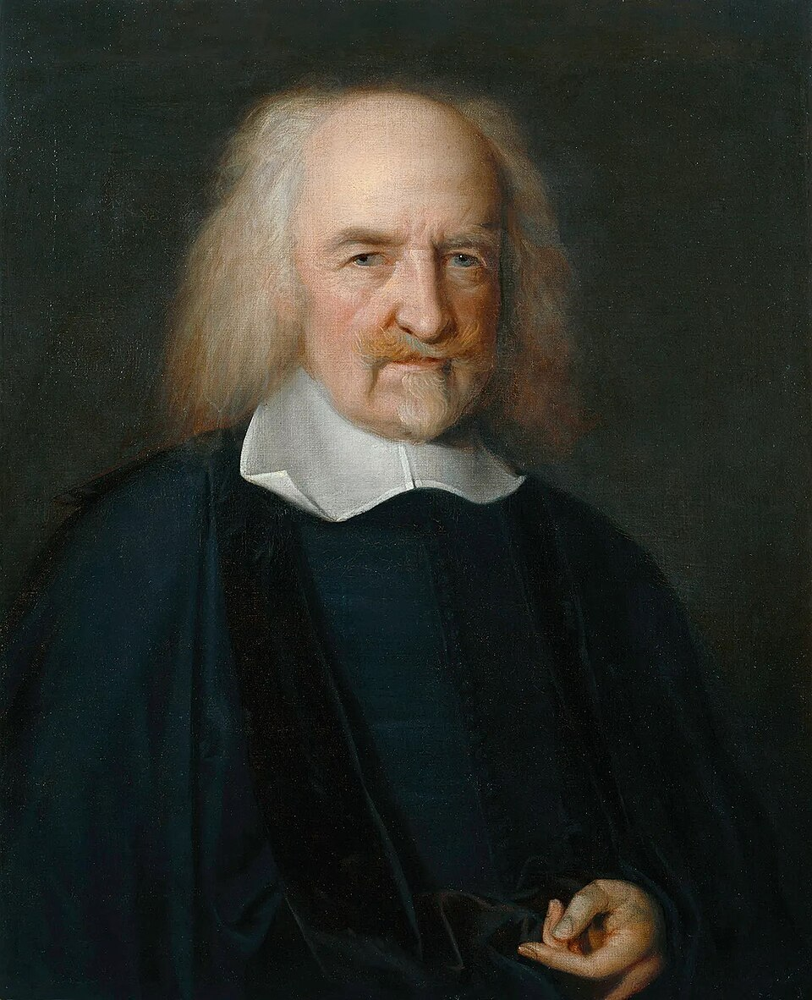

Who Was Thomas Hobbes?
Thomas Hobbes (1588–1679) was an English philosopher whose work transformed the study of political philosophy, human nature, knowledge, and the foundations of political authority. He was one of the central thinkers of early modern philosophy and is best known for Leviathan, published in 1651, one of the most important and controversial works in the history of political thought.
Hobbes developed a powerful explanation of why human beings need political authority. Rather than beginning with an ideal picture of a perfectly just society, he began with the dangers that arise when no common authority can enforce rules and maintain peace. Without such a power, he argued, individuals may be driven into insecurity, competition, distrust, and conflict—a condition he famously described as the state of nature.
Hobbes is therefore one of the most important thinkers associated with social contract theory. According to his account, individuals have rational reasons to escape the insecurity of the state of nature by agreeing to establish a common political authority. The purpose of this agreement is not primarily to create moral perfection, but to provide the peace and security necessary for human life and cooperation.
His political conclusions were deeply controversial. Hobbes defended a sovereign authority with extensive and undivided power, arguing that a divided government could allow political conflict to return and threaten civil peace. His theory consequently made him one of the most influential philosophers of political sovereignty, while also provoking enduring debates about liberty, authority, obedience, and the limits of government.
Thomas Hobbes: Quick Facts
- Full name — Thomas Hobbes
- Born — 5 April 1588
- Died — 4 December 1679
- Nationality — English
- Philosophical period — Early Modern Philosophy
- Major fields — Political philosophy, ethics, metaphysics, philosophy of mind, and philosophy of science
- Best-known work — Leviathan (1651)
- Major idea — Political authority is created to secure peace and protect individuals from destructive conflict
- Famous concept — The state of nature
- Political theory — Sovereignty and strong central authority
- Major contribution — A systematic theory of the social contract and the foundations of political obligation
- Important influence — Modern political philosophy, theories of sovereignty, and later social contract thought
Thomas Hobbes's Early Life and Historical Background

Thomas Hobbes was born in England in 1588, during a period of profound political, religious, and intellectual transformation in Europe. His long life extended from the final years of Elizabeth I through the English Civil War and into the Restoration of the monarchy. These dramatic historical changes provided the political background against which many of Hobbes's most important philosophical questions would later emerge.
Hobbes received a strong classical education and studied at Magdalen Hall, Oxford. He later entered the service of the influential Cavendish family, a connection that gave him opportunities to travel through Europe and encounter important intellectual developments beyond England. His education and travels contributed to his lifelong interest in history, mathematics, science, and the possibility of constructing philosophy through systematic reasoning.
During his travels and intellectual exchanges, Hobbes encountered major figures and movements associated with the scientific revolution. He became increasingly interested in geometry and in mechanical explanations of the natural world, believing that human beings and political society could also be investigated through clear principles of motion, causation, and rational analysis rather than through inherited authority alone.
The political instability of seventeenth-century England became especially important to Hobbes's philosophical development. Conflict over religion, the authority of the monarchy, Parliament, and the interpretation of law eventually contributed to the English Civil War. Hobbes witnessed how political disagreement could develop into violence, division, and the breakdown of established social order.
These experiences help explain why peace and security occupy such a central place in Hobbes's political philosophy. For Hobbes, the greatest political danger was not simply an imperfect or unpopular government, but the possibility of civil conflict in which no effective authority could prevent individuals and competing groups from turning against one another.
Thomas Hobbes and the English Civil War
The English Civil War formed one of the most important historical backgrounds to Thomas Hobbes's political philosophy. Beginning in the 1640s, the conflict exposed deep disagreements about royal power, Parliament, religion, and the ultimate source of political authority. For Hobbes, the struggle demonstrated with unusual clarity how a society could descend into violence when competing groups claimed the right to rule.
Hobbes experienced this period of instability not simply as a distant historical event but as a crisis that raised fundamental philosophical questions about peace and political obedience. The breakdown of established authority convinced him that disagreement could become dangerous when no recognized power existed to make final and enforceable decisions. Civil war therefore became a powerful example of the consequences of divided sovereignty and competing claims to legitimate authority.
His response was to develop a theory of sovereignty capable of preventing political fragmentation. Hobbes argued that a political community required a sufficiently powerful authority able to make binding decisions, enforce laws, settle disputes, and protect its members from violence. If several independent institutions could successfully claim ultimate authority, he believed, political conflict could easily become impossible to resolve.
This historical context makes Leviathan far more than an abstract exercise in political theory. The work attempts to explain why human beings need a common power and how political order can be constructed from the interests and fears of individuals themselves. Hobbes's overriding concern was to understand how societies could escape the destructive possibility of civil conflict and establish conditions in which peace could endure.
What Was Thomas Hobbes's Philosophy?
Thomas Hobbes's philosophy was an ambitious attempt to explain nature, human beings, knowledge, and political society through a systematic account of bodies, motion, causation, desire, and rational calculation. He was strongly influenced by the scientific developments of the early modern period and sought explanations based on natural causes rather than relying primarily on inherited philosophical authority.
In his political philosophy, Hobbes begins with individual human beings rather than assuming that society is naturally harmonious or morally ordered. He examines human desires, fears, ambitions, and vulnerabilities, then asks what would happen if individuals lived without a common political authority capable of establishing rules and enforcing peaceful cooperation among people with competing interests.
His answer leads to the famous idea of the state of nature, a condition in which there is no effective common power capable of providing reliable security or settling disputes. Under such circumstances, Hobbes argues, individuals cannot safely assume that others will remain peaceful, and the continuing possibility of conflict makes lasting cooperation deeply uncertain and difficult to maintain.
The solution is a social contract through which individuals authorize a sovereign power to establish peace and enforce common rules. Hobbes's philosophy therefore connects self-preservation, fear, desire, reason, political obligation, and sovereignty into a single systematic theory. Its central question is practical and fundamental: how can human beings create security when they cannot rely upon goodwill alone?
Thomas Hobbes's View of Human Nature
Thomas Hobbes is often described as having a pessimistic view of human nature, but his position is more complex than the simple claim that human beings are naturally evil. Hobbes understood people as beings moved by desires, fears, hopes, aversions, and changing expectations. Human behavior, in his account, is shaped primarily by the pursuit of what individuals believe will benefit or preserve them.
One of the strongest motivations in Hobbes's philosophy is self-preservation. Human beings naturally wish to avoid death, injury, and serious danger, and this concern becomes especially powerful when individuals cannot depend upon a stable system of protection. Hobbes therefore places fear alongside desire as a major force in human life, particularly when political order and personal security are absent.
Hobbes also emphasizes a fundamental equality among human beings in their vulnerability. Even a physically stronger or more intelligent person can be overcome through cooperation, planning, deception, or unexpected attack. Because no individual can guarantee permanent security through personal strength alone, people have reason to remain cautious about the intentions and possible actions of others.
Competition, distrust, fear, and the desire for recognition can consequently contribute to conflict, especially where no common authority exists to restrain them. Hobbes does not claim that every person constantly attacks everyone else, but rather that insecurity gives individuals reason to fear one another and prepare for possible danger. His political philosophy begins from this problem of mutual vulnerability rather than moral wickedness.
What Is Thomas Hobbes's State of Nature?
The state of nature is one of the most famous concepts in Thomas Hobbes's philosophy. It describes a condition in which human beings exist without an established government, common civil law, or political authority capable of settling disputes and enforcing agreements. Hobbes uses this idea to investigate what human relationships might become when there is no recognized power responsible for maintaining public security.
In such a condition, each individual must largely depend upon personal judgment when deciding what is necessary for survival and protection. There is no universally accepted authority capable of giving a final decision when people disagree about rights, possessions, threats, or obligations. This absence of a common judge means that conflicts can remain unresolved and may eventually depend upon individual power rather than established law.
Hobbes argues that this situation creates profound insecurity even among people who would prefer peace. An individual cannot always know whether another person will remain cooperative or become dangerous in the future. Fear of possible attack may therefore encourage defensive preparation, suspicion, or even attempts to gain an advantage before another person can become a threat.
The state of nature should not be understood simply as Hobbes's description of a particular stage of prehistoric human history. More importantly, it is a philosophical model that reveals the problem political authority is meant to solve. By imagining the absence of government, Hobbes seeks to explain why individuals might rationally choose to establish a common authority and accept restrictions upon their natural freedom.
What Did Hobbes Mean by the "War of All Against All"?
Thomas Hobbes is famous for describing the state of nature as a condition that can become a war of all against all. This expression should not be understood as meaning that every individual is physically fighting every other person at every moment. Hobbes uses the concept of war more broadly to describe a continuing condition in which peace cannot be securely relied upon and the possibility of violence remains present.
In Hobbes's account, war exists not only during actual battles but also during periods when people reasonably expect that conflict may occur. A society without reliable security can therefore remain in a condition of war even when temporary peace exists, because individuals must stay prepared for danger. The constant possibility of violence affects how people plan, trust, cooperate, and attempt to protect themselves.
Hobbes identifies several important sources of conflict, including competition for scarce advantages, distrust of other people, and the desire for recognition or reputation. When there is no common authority to enforce agreements, individuals may fear that cooperation will leave them vulnerable to exploitation. Under these conditions, suspicion can produce actions that increase insecurity even when no one originally desired open conflict.
Hobbes's analysis is therefore fundamentally concerned with the political problem of security. A peaceful society requires more than individuals who personally prefer peace; it also requires institutions capable of making cooperation dependable and discouraging violence. The purpose of political authority is to transform an uncertain relationship among individuals into an ordered system in which agreements and rules can be reliably enforced.
Why Did Hobbes Describe Life Without Government as Dangerous?
Hobbes believed that the absence of effective political authority would make long-term cooperation extremely difficult. People might wish to build homes, cultivate land, trade, study, and create, yet they would hesitate to invest significant effort when they could not be confident that their safety or possessions would be respected. Uncertainty about the future could therefore discourage many of the activities necessary for stable social development.
For this reason, the state of nature represents more than the immediate danger of physical violence. It also represents a deeper condition of uncertainty in which individuals cannot reliably plan for the future. Productive economic activity, scientific inquiry, cultural development, and lasting cooperation all depend to some extent upon the expectation that agreements will be honored and basic security will be maintained.
Hobbes famously described life under such conditions in deliberately severe language, emphasizing how insecurity could restrict the development of agriculture, commerce, learning, and other forms of civilized life. His point was not merely that people would constantly suffer physical attacks, but that fear and uncertainty would undermine the confidence required to pursue long-term projects and establish enduring forms of cooperation.
Hobbes's political philosophy therefore treats security as a fundamental condition for civilization itself. Peace allows individuals to pursue their interests without constantly fearing that violence will destroy the results of their efforts. Government becomes necessary not because human beings are incapable of cooperation, but because cooperation becomes fragile when no authority exists to make security and mutual agreements dependable.
Self-Preservation in Thomas Hobbes's Philosophy
Self-preservation stands at the center of Thomas Hobbes's understanding of human motivation. Individuals naturally seek to protect their lives and avoid serious danger, and this desire provides an important foundation for his explanation of political cooperation. Hobbes does not begin his political theory by assuming that people are naturally devoted to the common good, but by examining their fundamental concern for security.
The desire for survival does not automatically produce peaceful behavior. In conditions of insecurity, individuals may reasonably believe that others represent possible threats to their lives or possessions. Attempts to protect oneself can therefore create cycles of fear and distrust, especially when no common authority exists to assure people that agreements will be respected and violent behavior will be restrained.
Reason nevertheless offers a possible way out of this dangerous condition. Hobbes argues that rational individuals can recognize that peace is generally more beneficial than continuing conflict and that cooperation can provide greater security than isolated self-defense. Human reason therefore identifies practical rules that encourage people to seek peace when it can be achieved safely.
Hobbes's political system is consequently based not primarily upon ideal moral virtue but upon a practical recognition of shared human interests. People accept political authority because peace and security serve their fundamental desire to survive and live without constant fear. The sovereign emerges from this calculation as the power capable of making cooperation sufficiently reliable for individuals to escape persistent insecurity.
Thomas Hobbes's Laws of Nature
Hobbes believed that human reason could discover practical principles that guide individuals toward peace and self-preservation. He called these principles laws of nature, although their role differs significantly from many earlier theories of natural law based primarily on divine purpose or an objective moral order. For Hobbes, the laws of nature are rational conclusions about how people can best escape destructive danger.
The first and most fundamental direction of these laws is to seek peace when peace can be safely obtained. Rational individuals can recognize that continual conflict threatens their security and makes the satisfaction of their long-term interests difficult. When peaceful cooperation is impossible, however, individuals retain a natural concern for defending themselves and protecting their lives against serious threats.
Other laws of nature encourage individuals to make agreements, accept reasonable limits upon their freedom, and keep valid covenants when the conditions for mutual security exist. Yet Hobbes emphasizes an important difficulty: moral or rational rules alone cannot guarantee cooperation when people have good reason to fear that others will break their promises. Mutual distrust can make individually rational people reluctant to cooperate.
This problem creates the need for political authority capable of enforcing common rules. A sovereign power gives practical force to agreements by establishing public laws and attaching consequences to actions that threaten peace. Hobbes therefore connects the laws of nature directly to his theory of the state: reason shows people why peace is desirable, while political authority provides the security necessary for peaceful cooperation to endure.
Why Do People Create a State According to Hobbes?
According to Hobbes, people create a political state because individual efforts cannot reliably guarantee lasting peace and security. Even when many people sincerely prefer cooperation, each person may still fear that others will break agreements when circumstances change. Mutual distrust can therefore make cooperation unstable, since individuals cannot safely depend upon private promises alone when serious danger or personal advantage arises.
A common political authority changes this situation by establishing public rules that apply throughout the community. Instead of every individual acting as the final judge in personal disputes, citizens recognize an authority capable of making binding decisions and enforcing them. This creates a common framework within which disagreements can be settled without requiring individuals or groups to rely upon their own private power.
Hobbes therefore understands the state as an artificial political creation designed to solve a practical problem arising from human vulnerability and mutual insecurity. Political institutions do not simply emerge because human beings naturally live in perfect harmony. They are deliberately constructed because organized authority can provide a degree of security that isolated individuals cannot consistently create themselves.
The creation of the state represents a rational attempt to exchange some unrestricted individual freedom for the greater benefits of peace and protection. By accepting a common authority, individuals gain a system capable of enforcing agreements, restraining violence, and coordinating collective life. For Hobbes, the fundamental purpose of political society is therefore not the achievement of moral perfection but the preservation of peace under conditions where human beings can live with greater security.
Thomas Hobbes's Theory of Sovereignty
Sovereignty is one of the central concepts in Thomas Hobbes's political philosophy. A sovereign is the person or political body that possesses the ultimate authority to make binding decisions for a political community. The sovereign may be an individual monarch or an assembly, but its essential characteristic is the possession of a final authority capable of acting for the political community as a whole.
Hobbes argues that sovereignty must be sufficiently powerful to maintain peace and prevent political society from falling into internal conflict. If different institutions can independently claim the right to make final decisions, disagreements may become struggles over who possesses legitimate authority. In Hobbes's view, this division creates precisely the kind of political instability that the creation of a commonwealth was meant to end.
For this reason, Hobbes is commonly associated with the defense of absolute sovereignty. He believed that effective political authority could not depend constantly upon the private judgment of every individual subject, since citizens could otherwise reject laws whenever they personally disagreed with them. A sovereign must possess enough authority to make collective decisions effective even in the presence of continuing disagreement within society.
Hobbes's theory remains controversial because it appears to grant the sovereign extensive and far-reaching political power. Yet his central philosophical objective was to explain how a political community could escape insecurity and maintain peace over time. Sovereignty, for Hobbes, is not primarily valuable because power itself is admirable, but because a common and effective authority is necessary to prevent society from returning to destructive political conflict.
Why Did Hobbes Defend Absolute Sovereignty?
Hobbes believed that a weak or divided government could create an extremely dangerous political situation. When different groups each claim the right to exercise final authority, disagreements about law, religion, or government can become direct struggles over power. Without an accepted authority capable of making a final decision, political disputes may remain unresolved and eventually develop into open conflict or civil war.
A sovereign authority must therefore possess sufficient power to make laws, enforce decisions, defend the political community, and prevent private conflicts from becoming wider political crises. Hobbes considered these powers closely interconnected because a government that could make laws but not enforce them would provide little real protection. Political authority had to be effective in practice rather than existing only as a theoretical or symbolic claim.
Hobbes's defense of absolute sovereignty does not simply mean that he admired tyranny or arbitrary rule for its own sake. His argument begins from the belief that the alternative to a sufficiently powerful government may be the far greater danger of civil war and social collapse. A strong sovereign, however restrictive, could appear preferable to a condition in which no authority possessed the power to maintain lasting peace.
Critics have nevertheless argued that Hobbes gives insufficient protection against oppressive or abusive government. This criticism reveals one of the deepest tensions within his political philosophy: the conflict between political security and individual freedom. Hobbes gives priority to the prevention of disorder, while later political philosophers would place greater emphasis on limiting government power and protecting citizens against the authority of the state itself.
Thomas Hobbes's Leviathan

Leviathan, published in 1651, is Thomas Hobbes's most famous and influential philosophical work. It presents his mature account of human nature, knowledge, political authority, religion, and the social contract. Written during a period marked by profound political and religious conflict, the work attempts to explain how a stable political order can be constructed from the actions and interests of individual people.
The title refers to the powerful political entity created when individuals authorize a common sovereign to represent and govern them. Hobbes describes the state as an artificial person, formed through human agreement rather than existing naturally like an individual human being. Through this collective act of authorization, many separate individuals are politically united under a common authority capable of acting in their name.
Leviathan begins with an analysis of human beings as natural and psychological creatures before moving toward questions of conflict, political authority, law, and religion. This structure reflects Hobbes's broader philosophical ambition to build political theory upon an understanding of human nature and human motivation. Political institutions, in his system, must be explained through the desires, fears, and rational calculations of the individuals who create and obey them.
The work remains one of the most important texts in the history of modern political thought. Its discussions of the state of nature, the social contract, sovereignty, liberty, and political obligation continue to shape debates about the purpose and limits of government. Whether one accepts or rejects Hobbes's powerful sovereign, Leviathan established a new and enduring way of asking how political authority can arise from individuals seeking protection from insecurity and conflict.
The State as an Artificial Person
One of the most distinctive ideas in Leviathan is Hobbes's description of the political state as an artificial person. The state does not exist naturally in the same way as an individual human being; it is created through human actions, agreements, and acts of authorization. Political order is therefore something constructed by people rather than a natural organism that exists independently of human choice.
Individuals authorize the sovereign to represent the political community and to act on its behalf. Through this process, many separate individuals become politically united under a common authority capable of speaking and acting as one public body. Hobbes's theory explains how a collection of individuals can acquire a unified political identity without requiring those individuals to possess identical opinions, interests, or personal desires.
The idea of representation is essential to this theory. The sovereign acts as the representative of the persons who have authorized its authority, and its public actions are treated as actions performed on behalf of the political community. This helps explain why Hobbes considers the state a single political person despite being composed of many different human beings with independent lives and frequently conflicting interests.
This concept became historically important for later ways of understanding political institutions and the modern state. Governments can be understood as constructed systems of authority rather than simply as extensions of a ruler's private personality or family. Hobbes's analysis therefore helped develop a more abstract understanding of political power, representation, and institutional authority that remains significant in modern political theory.
Thomas Hobbes on Liberty and Freedom
Thomas Hobbes developed an influential and distinctive understanding of liberty. He generally defined freedom as the absence of external obstacles that prevent a person from acting according to their will. A person is free, in this sense, when nothing outside them physically or legally prevents them from carrying out an action they are capable of performing and genuinely wish to perform.
This definition differs from theories that define freedom primarily as participation in government or complete independence from political authority. For Hobbes, a person may live under laws and still possess considerable freedom in areas where the law does not forbid action. The existence of government does not therefore eliminate liberty entirely; instead, laws establish limits while leaving individuals free in many areas not directly regulated by political authority.
Hobbes's understanding of liberty creates an important tension within his political philosophy. Individuals accept restrictions upon some of their natural freedom in order to gain the greater security provided by political order. Yet the absence of government would not necessarily produce a more meaningful or secure freedom, because constant fear and insecurity could prevent people from safely exercising their abilities in everyday life.
His philosophy therefore presents liberty and security not simply as absolute opposites but as concepts that must be understood within a broader system of law and political cooperation. Political authority limits certain actions, but it can also create the stable conditions under which peaceful activity becomes possible. The continuing question raised by Hobbes is how much freedom individuals should surrender in exchange for the protection that an organized political community can provide.
Thomas Hobbes on Law and Justice
Hobbes connects law and justice closely with the existence of political authority. In the state of nature, there is no universally recognized civil institution capable of making final judgments and enforcing common rules. Individuals may have their own views about what is fair, necessary, or justified, but disagreement remains difficult to resolve when no public authority possesses the recognized power to settle disputes.
Once a political community establishes a sovereign authority, public laws become possible. These laws provide common standards for determining which actions are permitted, prohibited, or required within the community. Instead of each individual deciding legal questions according to private judgment, citizens become subject to publicly established rules backed by an authority capable of interpreting and enforcing those rules.
Hobbes therefore treats justice partly as a problem concerning agreements and their reliable enforcement. Promises and contracts are difficult to maintain when individuals believe that others can violate them without consequences. A public authority makes cooperation more dependable by discouraging people from breaking agreements whenever doing so appears to offer an immediate personal advantage over continued mutual cooperation.
This emphasis on institutions distinguishes Hobbes from philosophers who believe that a stable moral and political order can be maintained primarily through individual virtue or natural social harmony. For Hobbes, peace requires more than good intentions because people may disagree, distrust one another, or pursue conflicting interests. Law and political authority create the institutional framework through which cooperation can become sufficiently stable to support justice and lasting civil order.
Thomas Hobbes on Religion and Political Power
Religion was one of the most controversial subjects in Thomas Hobbes's philosophy because the seventeenth century was deeply marked by conflicts involving religious doctrine, church authority, and political allegiance. Hobbes believed that disagreements about spiritual truth could become especially dangerous when different religious groups claimed the right to command citizens independently of the civil government.
Hobbes was particularly concerned about the existence of competing claims to ultimate authority within the same political community. If a religious institution could command obedience in ways that directly contradicted the sovereign, citizens might be forced to choose between rival authorities. For Hobbes, this division of loyalty created a serious danger of political instability and could contribute to civil conflict.
In Leviathan, Hobbes therefore examines scripture, religious belief, ecclesiastical authority, prophecy, and the interpretation of sacred texts alongside his political theory. He argues that public religious authority must ultimately remain compatible with civil sovereignty, since peace cannot easily survive where independent powers claim an unrestricted right to govern the same population.
Hobbes's views made him highly controversial because they challenged the political independence traditionally claimed by religious institutions. His arguments do not simply dismiss religion as unimportant; rather, they attempt to place religious authority within a political framework capable of preventing competing claims from destroying civil peace and the unity of the commonwealth.
Thomas Hobbes's Materialism and Philosophy of Nature
Thomas Hobbes was an important figure in the development of early modern materialism, the view that reality can fundamentally be understood in terms of bodies and their motion. He rejected many traditional scholastic explanations that appealed to immaterial forms or hidden essences, seeking instead to explain natural phenomena through matter, movement, causation, and mechanical processes.
Hobbes extended this approach to the study of human beings. Sensation, imagination, memory, desire, and other aspects of mental life were, in his philosophy, connected to physical processes rather than belonging to an entirely separate immaterial realm. Human beings were therefore understood as part of nature and subject, at least in principle, to causal explanation.
His materialist philosophy was closely connected with the scientific transformations of the seventeenth century. Hobbes admired the possibility of constructing systematic explanations by beginning with basic principles and tracing their consequences through careful reasoning. Geometry and mechanical science provided important models for his ambition to make philosophy more rigorous and demonstrative.
Many of Hobbes's specific scientific theories were later rejected or superseded, and his disputes with other scientists revealed significant limitations in his understanding of mathematics and natural science. Nevertheless, his attempt to explain nature and human life within a unified mechanistic framework remains an important part of early modern intellectual history and the development of materialist philosophy.
Thomas Hobbes's Theory of Knowledge
Hobbes believed that human knowledge begins with experience of the external world. Objects affect the senses, producing sensations from which more complex mental processes gradually develop. Imagination and memory preserve traces of previous sensations, allowing human beings to think about things that are no longer immediately present before them.
Hobbes gave particular importance to language because he believed that words and names allow human beings to organize experience and reason systematically. Through language, people can record ideas, compare different concepts, communicate with others, and construct increasingly complex chains of reasoning about causes, consequences, and relationships.
He also regarded precise definitions as essential to philosophical inquiry. Many intellectual disputes, in Hobbes's view, arise because people use important words without clearly agreeing about what those words mean. Philosophy therefore requires careful attention to definitions so that reasoning does not become confused by ambiguous or misleading language.
Hobbes famously understood reasoning in a highly systematic way, often describing it as a kind of calculation involving the orderly combination and comparison of concepts. This approach reflects his broader ambition to construct philosophy as a disciplined system of knowledge in which clear definitions and logical reasoning could produce reliable conclusions.
Fear and Reason in Hobbes's Philosophy
Fear plays a central role in Thomas Hobbes's understanding of political life, particularly the fear of violent death and physical insecurity. Unlike philosophers who treated fear merely as an irrational weakness, Hobbes recognized that fear can provide important information about danger and can motivate individuals to take practical steps toward their own preservation and long-term security.
In the state of nature, fear arises because individuals cannot reliably depend upon others to remain peaceful. Even a person who prefers cooperation may have reason to worry that another person could attack first or break an agreement when circumstances change. This mutual uncertainty creates a condition in which distrust can become rational even among people seeking peace.
Reason offers a possible escape from this insecurity. Hobbes argues that rational individuals can recognize that continuing conflict threatens their most fundamental interests and that peace is generally preferable whenever it can be safely achieved. Reason therefore identifies the practical rules and institutional arrangements through which cooperation can become more secure and dependable.
Hobbes's philosophy consequently connects passion and reason rather than treating them as completely opposed forces. Fear supplies a powerful motivation to escape danger, while reason helps individuals understand how peace, agreement, and political authority can better protect them. The social contract emerges from this interaction between human desire, emotional vulnerability, and rational calculation.
Thomas Hobbes and Modern Political Philosophy
Thomas Hobbes occupies a foundational position in the history of modern political philosophy. His work helped redirect political theory toward questions concerning individual interests, security, consent, political obligation, and the institutional justification of authority. Rather than simply accepting inherited political arrangements, Hobbes asked why rational individuals should agree to submit themselves to a common political power.
Earlier political traditions often explained political authority through natural hierarchy, inherited custom, classical ideas of virtue, or divine sanction. Hobbes developed a different starting point by examining human beings as individuals concerned with their own preservation and security. Political authority, on this account, must be explained by the practical problem that individuals face when no common power exists.
His theory of the social contract influenced generations of later philosophers, including thinkers who strongly rejected his conclusions. John Locke, Jean-Jacques Rousseau, and Immanuel Kant developed very different accounts of freedom, consent, rights, and political obligation, but Hobbes helped establish the fundamental questions against which these later theories would define their own positions.
Hobbes remains important not only because of his defense of sovereignty but also because of the method through which he analyzed political authority. By connecting human motivation, rational calculation, insecurity, and institutional power into a single systematic argument, he helped establish many of the central problems that continue to define modern political philosophy.
Thomas Hobbes and John Locke: What Is the Difference?
Thomas Hobbes and John Locke are both central figures in the social contract tradition, yet they developed profoundly different accounts of the state of nature and the proper limits of political power. Both begin by asking how political authority can be justified, but their different assumptions about human rights, natural law, and government lead them toward sharply contrasting conclusions.
Hobbes describes the state of nature as fundamentally insecure because no common authority exists to settle disputes and guarantee protection. Locke's state of nature, by contrast, is governed by a natural moral law and does not necessarily amount to a condition of universal conflict. Locke nevertheless agrees that the absence of an impartial political judge can make the protection of rights uncertain and difficult.
These differences produce very different theories of sovereignty. Hobbes argues that peace requires a powerful and largely undivided sovereign whose authority cannot be continually overridden by private judgment. Locke places much greater emphasis on limited government, natural rights, and the idea that political authority exists to protect rather than simply dominate the individuals who establish it.
Locke also gives citizens a stronger right of resistance when government seriously violates its proper purpose. Their disagreement therefore became fundamental to later political thought: Hobbes is commonly associated with security and political sovereignty, while Locke became a major influence on liberal theories of individual rights, constitutional government, consent, and the legitimate limitation of political power.
Thomas Hobbes and Jean-Jacques Rousseau
Thomas Hobbes and Jean-Jacques Rousseau are both famous for using the idea of a state of nature, but they employ the concept in very different ways. Each philosopher asks what human life might be like without established political society, yet they reach sharply different conclusions about human motivation, conflict, and the origins of social inequality.
Hobbes emphasizes insecurity, competition, distrust, and the possibility of violent conflict where no common political authority exists. Rousseau, by contrast, argues that human beings in an original condition should not be imagined as naturally engaged in constant conflict. For Rousseau, many of the destructive passions associated with social life emerge through the historical development of property and inequality.
Their theories of the social contract are equally different. Hobbes explains political association primarily as the creation of a sovereign authority capable of maintaining peace and security. Rousseau instead develops the idea of political legitimacy around the general will, asking how individuals can become members of a political community without simply surrendering their freedom to another person's private authority.
The contrast between Hobbes and Rousseau reveals two major approaches to modern political philosophy. Hobbes begins with the problem of insecurity and asks how authority can end destructive conflict, whereas Rousseau is deeply concerned with freedom, equality, and the possibility that political society itself can corrupt human relationships. Their disagreement continues to shape debates about the origins and purpose of political institutions.
Major Works of Thomas Hobbes
- Leviathan (1651) — Hobbes's most famous work and his fullest treatment of human nature, the state of nature, social contract theory, sovereignty, religion, and political authority.
- De Cive (1642) — An important Latin work on citizenship and political authority that presents an earlier version of several arguments later developed more fully in Leviathan.
- The Elements of Law (written 1640) — An early presentation of Hobbes's developing ideas about human nature, political order, sovereignty, and the causes of conflict within society.
- De Corpore (1655) — A major work within Hobbes's broader philosophical system, concerned with body, motion, language, reasoning, and the foundations of scientific knowledge.
- De Homine (1658) — A work examining human beings within Hobbes's systematic philosophical framework and addressing subjects including sensation, knowledge, language, and human nature.
- Behemoth — A historical and philosophical examination of the English Civil War, its religious and political causes, and the destructive consequences of divided authority and civil conflict.
Thomas Hobbes's Main Philosophical Ideas
1. The State of Nature
Without a common political authority, individuals exist in a condition of insecurity in which disputes cannot always be peacefully resolved and no public power can guarantee lasting protection. The state of nature functions as Hobbes's model for explaining why individuals have rational reasons to seek a stable political order capable of maintaining peace.
2. The Social Contract
Individuals rationally agree with one another to establish a common authority because peace and security are generally more beneficial than the continuing dangers of conflict. Through this agreement, people authorize a sovereign capable of acting for the political community and enforcing the conditions necessary for cooperation.
3. Sovereignty
Political authority must possess sufficient and effective power to make binding decisions, enforce laws, settle disputes, and prevent competing groups from destroying public order. Hobbes therefore argues that divided claims to ultimate authority are dangerous because they can reproduce the conflicts that political government was created to overcome.
4. Self-Preservation
The desire to preserve one's life and avoid serious harm is one of the most fundamental motivations in Hobbes's philosophy. This concern with survival helps explain both the insecurity of the state of nature and the willingness of rational individuals to accept political obligations in exchange for a more reliable system of protection and peace.
5. Peace Through Political Authority
Hobbes believes that stable peace requires more than individual goodwill or moral intention. Agreements become dependable only when a sufficiently powerful public authority can establish common rules and discourage people from breaking them whenever private advantage or fear makes cooperation appear temporarily disadvantageous.
6. Liberty as the Absence of External Obstacles
Hobbes defines freedom largely as the absence of external obstacles that physically prevent a person from acting according to their will. This distinctive definition allows him to argue that individuals may retain important forms of liberty even within a political system governed by law and supported by extensive sovereign authority.
Criticisms of Thomas Hobbes's Philosophy
One of the most common criticisms of Thomas Hobbes concerns his description of the state of nature and human motivation. Critics argue that his model gives too much importance to competition, fear, and distrust while underestimating the human capacities for sympathy, cooperation, family life, friendship, and spontaneous forms of social organization outside the state.
Hobbes's defense of extensive sovereign power has also received sustained criticism. Philosophers concerned with individual rights and constitutional government argue that concentrating too much authority in a sovereign can create a serious danger of oppression. A government powerful enough to prevent disorder may itself become a threat when citizens lack effective protections against the abuse of political power.
Others question whether political obligation can genuinely be justified by a hypothetical social contract. Most citizens never explicitly agreed to the establishment of the governments under which they live, leading critics to ask how an imagined or theoretical agreement can create actual duties of obedience. This problem became central to later debates about consent and political legitimacy.
Despite these criticisms, Hobbes remains enormously important because he formulated the problems of political order with exceptional clarity. His philosophy forces later thinkers to explain how security can coexist with freedom, why individuals should obey political authority, and what limits should exist on sovereign power. These questions remain central to modern political philosophy.
Thomas Hobbes's Influence and Legacy
Thomas Hobbes had a profound influence on the development of modern political thought. Even philosophers who strongly rejected his conclusions were forced to respond to his arguments concerning the state of nature, human insecurity, political cooperation, and the justification of authority. His work helped make the relationship between the individual and the state a central problem of modern philosophy.
His social contract theory became an important starting point for later thinkers such as John Locke and Jean-Jacques Rousseau. Both developed alternative accounts of consent, natural rights, freedom, and the legitimate limits of government, yet their theories were shaped partly through direct disagreement with Hobbes's powerful account of insecurity and political sovereignty.
Hobbes also influenced later debates in political realism, international relations, legal theory, philosophy of the state, and theories of security. His analysis of what happens when no common authority exists continues to provide an important conceptual framework for discussions of conflict between states and the difficulties of maintaining cooperation in conditions of mutual distrust.
His greatest legacy may be the seriousness with which he confronted a fundamental political question: Why should human beings obey political authority at all? Hobbes answered by connecting political obedience to the need for security, peace, and self-preservation, but the tension between authority and freedom in his solution continues to provoke philosophical debate centuries later.
Thomas Hobbes's Philosophy Explained Simply
Thomas Hobbes begins with a simple problem: what happens when people have no government or common authority capable of protecting them and resolving their disputes?
- What is the state of nature? A condition without an effective common political authority.
- Why is it dangerous? People cannot reliably trust one another, and disputes can become conflicts because no common power can enforce peace.
- What is the solution? Individuals agree to create a common political authority through a social contract.
- What is the Leviathan? The powerful political state created to maintain peace and security.
- Why is sovereignty important? The government needs sufficient authority to enforce laws and prevent society from collapsing into conflict.
Why Is Thomas Hobbes Important in the History of Philosophy?
Thomas Hobbes is important because he helped establish many of the central questions of modern political philosophy. His work asks how political authority can be justified without relying entirely upon tradition, religion, or inherited hierarchy.
His theory of the state of nature became a powerful philosophical tool for examining the relationship between individuals and government. Later philosophers adopted, modified, and criticized this method while developing their own theories of political legitimacy.
Hobbes also made security a central philosophical problem. He showed that political institutions are not only concerned with ideals of justice but also with the practical prevention of violence, fear, and social collapse.
For these reasons, Thomas Hobbes remains one of the most important thinkers in modern philosophy, political theory, and the history of the social contract tradition. :contentReference[oaicite:9]{index=9}
Frequently Asked Questions About Thomas Hobbes
Who was Thomas Hobbes?
Thomas Hobbes was a seventeenth-century English philosopher best known for his political philosophy, social contract theory, and his famous work Leviathan. He is one of the foundational thinkers of modern political philosophy.
What is Thomas Hobbes famous for?
Thomas Hobbes is most famous for Leviathan, the idea of the state of nature, the social contract, his theory of sovereignty, and his argument that strong political authority is necessary for peace and security.
What was Thomas Hobbes's philosophy?
Thomas Hobbes's philosophy examined human nature, self-preservation, knowledge, materialism, political authority, and the conditions required for social peace. His political theory argues that individuals rationally create a sovereign authority to escape insecurity and conflict.
What is the state of nature according to Hobbes?
The state of nature is a hypothetical condition in which there is no effective common government or political authority. Hobbes argues that such a condition creates insecurity because disputes cannot be reliably settled or agreements consistently enforced.
What did Hobbes mean by the war of all against all?
Hobbes used this idea to describe a condition of continuing insecurity and potential conflict rather than constant physical fighting between every individual. Without a common authority, people may have reason to fear one another and prepare for possible violence.
What is Thomas Hobbes's social contract theory?
Hobbes's social contract theory argues that individuals rationally agree to establish a common political authority because peace and security are preferable to the dangers of living without an effective system of government.
What is Leviathan by Thomas Hobbes?
Leviathan is Thomas Hobbes's most famous philosophical work, published in 1651. It presents his theories of human nature, the state of nature, the social contract, sovereignty, law, religion, and political authority.
Why did Hobbes believe in a strong government?
Hobbes believed that a strong government was necessary to prevent conflict and maintain social peace. Without a common authority capable of enforcing laws, he argued that society could become unstable and individuals could lose the security necessary for civilized life.
Did Thomas Hobbes believe in absolute monarchy?
Hobbes defended absolute sovereignty, but his theory of sovereignty did not require that the sovereign always be a monarch. He was primarily concerned that political authority should be sufficiently unified and powerful to maintain peace.
What was Hobbes's view of human nature?
Hobbes believed that human beings are motivated by desires, fears, hopes, and self-preservation. He emphasized competition and distrust but did not simply argue that all people are naturally evil.
What did Thomas Hobbes believe about liberty?
Hobbes generally defined liberty as the absence of external obstacles that prevent a person from acting. His theory therefore allows for the existence of individual freedom within a political system governed by law.
How did Thomas Hobbes influence John Locke?
Hobbes helped establish the social contract tradition in which Locke later developed his own theory of political authority. Locke strongly disagreed with Hobbes about the state of nature, natural rights, and the proper limits of government.
What is the difference between Hobbes and Rousseau?
Hobbes describes the pre-political condition as deeply insecure and potentially conflict-filled, while Rousseau developed a very different account of early human life. Their theories of the social contract and political freedom also differ significantly.
Why is Thomas Hobbes important today?
Thomas Hobbes remains important because modern societies continue to debate the relationship between security and liberty, the justification of political authority, the limits of government, and the conditions necessary for peaceful cooperation.
Related Modern and Enlightenment Philosophers
Explore other major philosophers who shaped modern political philosophy, empiricism, rationalism, social contract theory, ethics, metaphysics, and the development of Enlightenment thought.
Related Areas of Philosophy
Thomas Hobbes's philosophy connects political philosophy with ethics, social contract theory, philosophy of law, metaphysics, philosophy of mind, materialism, and the history of modern philosophy.
Why Thomas Hobbes Still Matters
Thomas Hobbes remains one of the most important philosophers for understanding the foundations of political authority. His philosophy begins with the problem of insecurity and asks how individuals can create a stable political order capable of protecting them from violence and conflict.
His concepts of the state of nature, the social contract, sovereignty, and political obligation transformed the history of political thought. Even philosophers who rejected Hobbes's defense of extensive sovereign power continued to work within problems that his philosophy had helped define.
Hobbes also remains relevant to modern debates about the relationship between liberty and security. How much authority should governments possess? What makes political power legitimate? What do individuals owe to the state in exchange for protection?
These questions ensure that Thomas Hobbes's philosophy remains central to the study of political theory, social contract theory, and the history of modern philosophy.
Explore Great Philosophers
Thomas Hobbes and Social Contract Theory
Thomas Hobbes's social contract theory explains how political authority can arise from an agreement among individuals seeking greater security. Hobbes argues that people have rational reasons to leave the insecurity associated with the state of nature and establish a common power. The contract is therefore rooted in self-preservation and the shared recognition that peace is generally preferable to continuing uncertainty.
The contract is not primarily an agreement between the people and a ruler in which both sides remain equal parties with identical obligations. Instead, individuals agree with one another to authorize a person or assembly to act as their political representative. Through this mutual authorization, the sovereign receives the authority necessary to make decisions on behalf of the political community as a unified body.
By creating a common authority, individuals gain a political system capable of making laws, settling disputes, enforcing agreements, and protecting society against internal violence. Hobbes believes that the effectiveness of this authority is essential because a powerless government cannot reliably provide the security for which the political community was originally created. Peace and protection are therefore the central purposes of the state.
Hobbes's theory became one of the foundations of the modern social contract tradition, although later thinkers developed very different versions of the idea. John Locke placed greater emphasis on natural rights and limited government, while Jean-Jacques Rousseau developed a different account of political freedom and collective authority. Hobbes nevertheless established the enduring question of how individual consent can provide a foundation for legitimate political power.